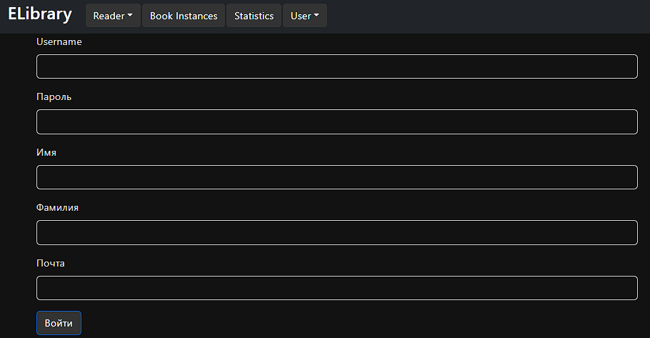
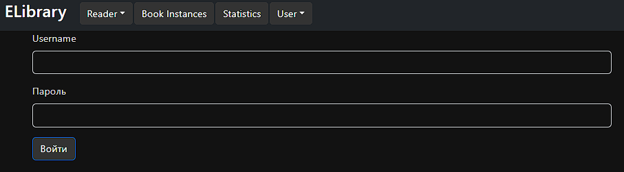
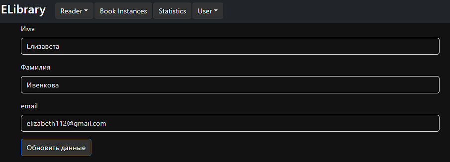
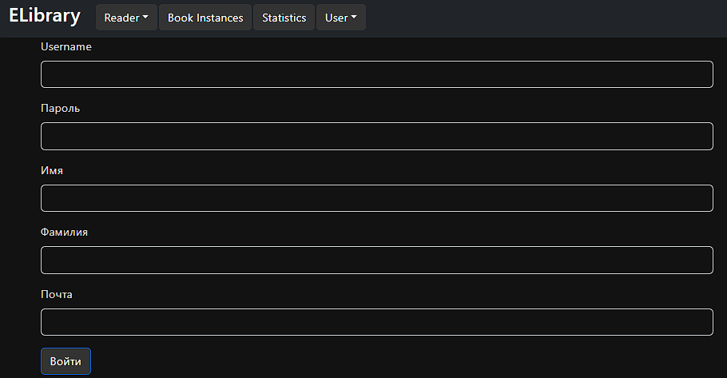
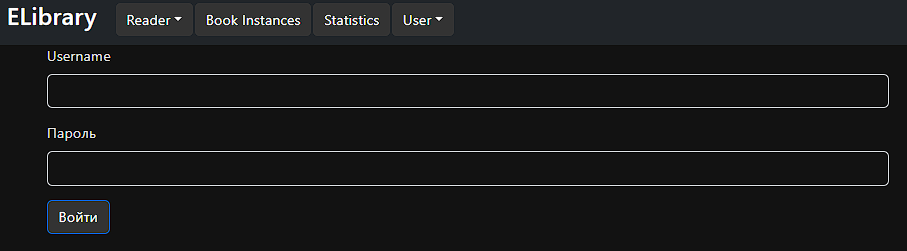
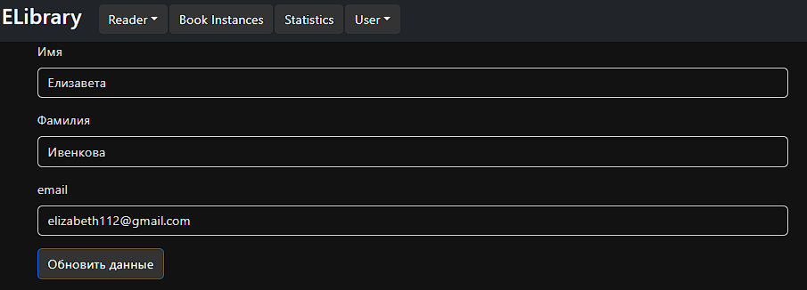

Логин, регистрация обновление данных пользователя
Регистрация
Позволяет пользователю зарегестрироваться 
Станица логина
Выглядит следующим образом 
Страница изменения данных
Позволяет изменить пользователю данные о себе

Позволяет пользователю зарегестрироваться 
Выглядит следующим образом 
Позволяет изменить пользователю данные о себе
